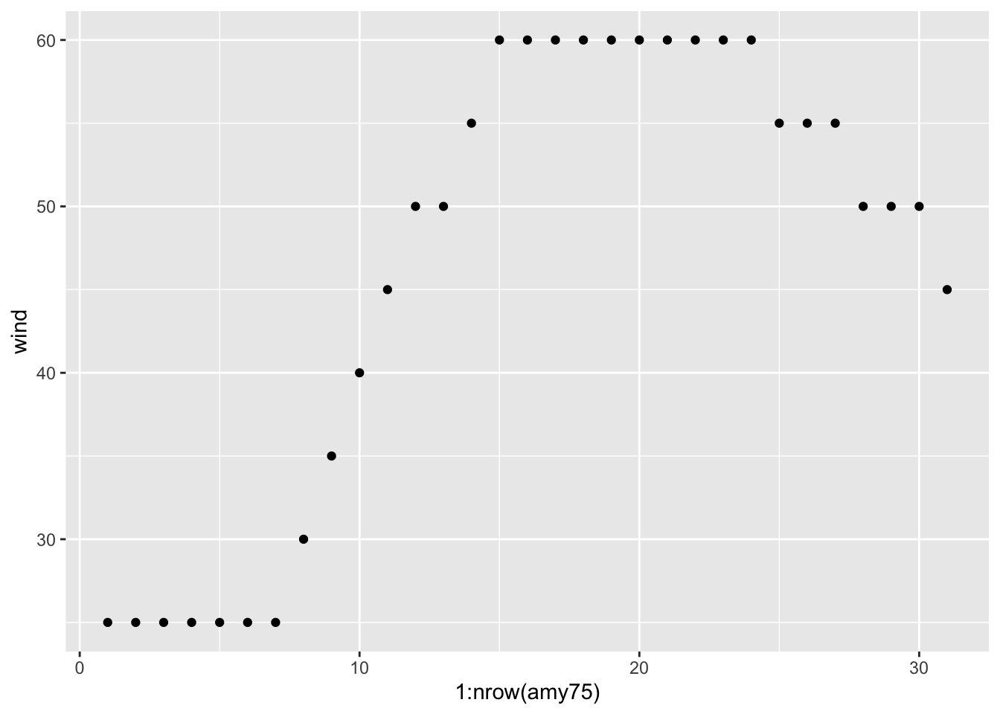
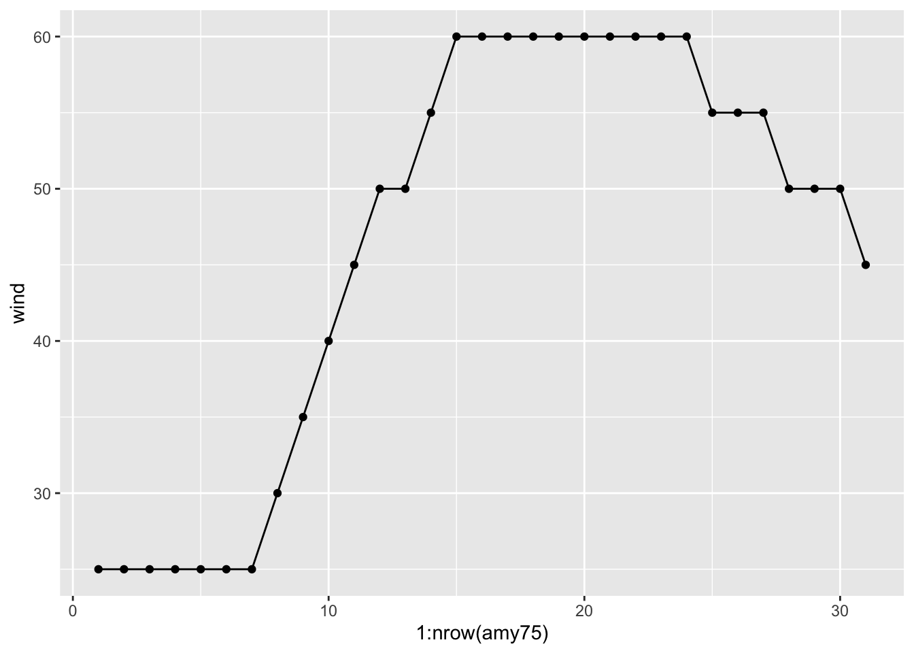
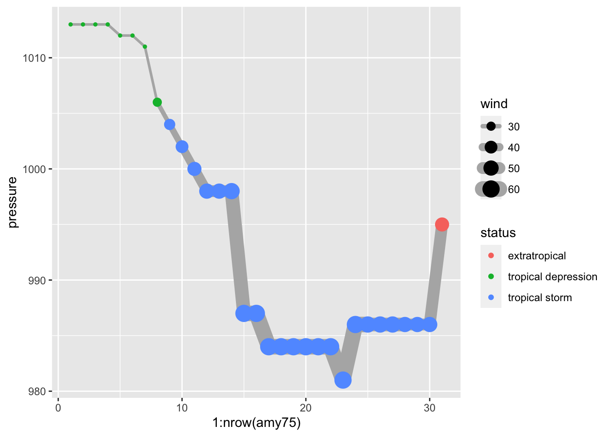

Let’s focus on storm Amy in 1975, subsetting storms75 to filter out just the rows of Amy into its own table
amy75 <-filter(storms75, name =="Amy")amy75
# A tibble: 31 × 13
name year month day hour lat long status category wind pressure
<chr> <dbl> <dbl> <int> <dbl> <dbl> <dbl> <fct> <dbl> <int> <int>
1 Amy 1975 6 27 0 27.5 -79 tropical d… NA 25 1013
2 Amy 1975 6 27 6 28.5 -79 tropical d… NA 25 1013
3 Amy 1975 6 27 12 29.5 -79 tropical d… NA 25 1013
4 Amy 1975 6 27 18 30.5 -79 tropical d… NA 25 1013
5 Amy 1975 6 28 0 31.5 -78.8 tropical d… NA 25 1012
6 Amy 1975 6 28 6 32.4 -78.7 tropical d… NA 25 1012
7 Amy 1975 6 28 12 33.3 -78 tropical d… NA 25 1011
8 Amy 1975 6 28 18 34 -77 tropical d… NA 30 1006
9 Amy 1975 6 29 0 34.4 -75.8 tropical s… NA 35 1004
10 Amy 1975 6 29 6 34 -74.8 tropical s… NA 40 1002
# ℹ 21 more rows
# ℹ 2 more variables: tropicalstorm_force_diameter <int>,
# hurricane_force_diameter <int>
The same table can also be obtained with this alternative command applied on the entire storms tibble, and filtering using a compound logical condition:
# equivalent commandamy75 <-filter(storms, year ==1975& name =="Amy")
9.1 Exploring wind
Let’s keep exploring wind but now let’s do it chronologically, that is, graphing the wind values in the order that they were recorded (recall storms are tracked every six hours).
We begin with a scatterplot using geom_point(), and we specify that the x-axis should use a numeric sequence 1:nrow(amy75) from the first row till the last row of amy75, and wind for y-axis:
ggplot(data = amy75, aes(x =1:nrow(amy75), y = wind)) +geom_point()

Because the x-axis denotes progression over time, we can connect the dots with a line. A simple way to do this is by adding another layer to our plot, this time with geom_line()
ggplot(data = amy75, aes(x =1:nrow(amy75), y = wind)) +geom_point() +geom_line()

As you can tell, Amy started to being recorded with wind speed of 25 knots, and then after (7 x 6) = 42 hours, its speed kept increasing to 30, 35, 40, and so on until reaching its maximum speed of 60 knots that lasted 54 hours (9 x 6).
At this point, we can ask about the status of Amy along its lifetime. One option is to map status to the color attribute of points:
We see that Amy started as a tropical depression, and then became a tropical storm, but never became a hurricane. For a storm to reach hurricane status, of category 1, it must have one-minute maximum sustained winds of at least 64 kn (33 m/s; 74 mph; 119 km/h).
9.2 Exploring pressure
What about the pressure values of Amy? We can produce a similar scatterplot with a line connecting the dots:
As an exploratory exercise, we can also play with the size of points, the size (width) of lines, colors, etc. Here’s one suggestion graphing pressure and taking into account the wind speed reflected in the size of points and line segments:
ggplot(data = amy75, aes(x =1:nrow(amy75), y = pressure)) +geom_line(aes(linewidth = wind), lineend ="round", color ='gray70') +geom_point(aes(size = wind, color = status))

If you know a little bit about storms, you know that there’s actually an association between wind and pressure. But let’s pretend for a second that we don’t know much about tropical storms, hurricanes, and things like that. By looking at the previous chart, this should allows us to guess that something is going on between the pressure of a storm and its wind speed. As Amy becomes stronger, with higher winds, its pressure levels drop accordingly, suggesting a negative correlation, which is confirmed when we compute this statistic:
3) Use "dplyr" functions/commands to create a table (e.g. tibble) storm_names_1980s containing the name and year of storms recorded during the 1980s (i.e. from 1980 to 1989).
4) Create boxplots of pressure, for storms in 1980. You can also try graphing violins (geom_violin()) instead of boxplots (geom_boxplot()).
Show answer
storms |>filter(year ==1980) |>ggplot(aes(x = name, y = pressure)) +geom_boxplot()
5) Use "ggplot2" functions to make a single scatter plot of wind and pressure for all storms. Use status to add color to the dots.
Show answer
ggplot(data = storms, aes(x = wind, y = pressure, color = status)) +geom_point()
6) Use "ggplot2" functions to make a scatterplot of wind and pressure for all storms, faceting by month, and using status to differentiate by color.
Show answer
ggplot(data = storms, aes(x = wind, y = pressure, color = status)) +geom_point() +facet_wrap(~ month)
7) Use "ggplot2" functions to make a scatterplot of wind and pressure for all storms, but now create facets based on month. Feel free to add some amount of alpha transparency to the color of dots. Likewise, include a title and subtitle.
Show answer
ggplot(data = storms, aes(x = wind, y = pressure, color = status)) +geom_point(alpha =0.3) +facet_wrap(~ month) +labs(title ="Wind and Pressure",subtitle ="Tropical storms in North Atlantic")